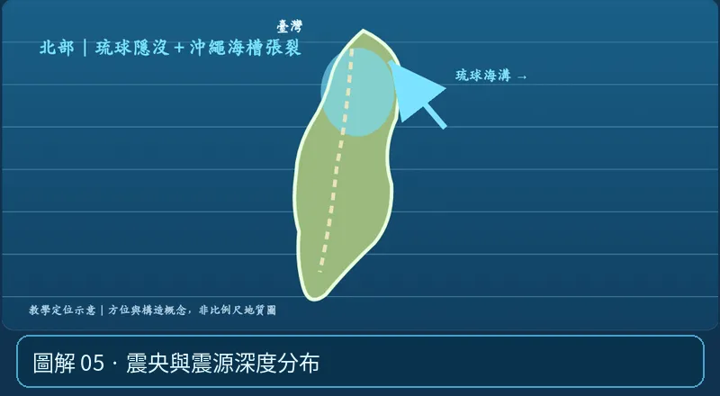

第 06 單元｜圖解 5/6｜課本 p.89–92（總測 p.93–99）
震央與震源深度分布
臺灣可概分西部、東部、東北部地震帶；東部與東北部地震頻繁，西部多與活動斷層相關。各區震源深度分布不同，反映各自構造環境。
① 看一眼② 操作圖③ 自己推理④ 揭開解答
🔬 這張圖，請自己動手試
操作圖上方的頁籤、滑桿或按鈕；圖片也能左右滑動放大觀看。
互動圖解 · 震央與震源深度分布

原創 SVG 地科教學模型，方便理解，非真實比例、非即時地震資料；互動無法載入時仍有靜態圖。
STEP 01 · 先觀察
👀 眼睛先找線索
從北部切到中部再切到南部，體會不同構造環境的震源深度與地震型態不完全一樣。
💡 為什麼是這樣？
不同隱沒幾何、碰撞帶與活動斷層造成不同深度和空間分布；解析真正的震源深度圖必須配合測站資料。
🎯 換個問法想一題
震央都在臺灣附近，就能說震源深度一定相同嗎？
我想好了，點開看答案 ↓
不能。位置、板塊構造與震源深度是不同資訊。
⚡ 一句記住：三條震帶